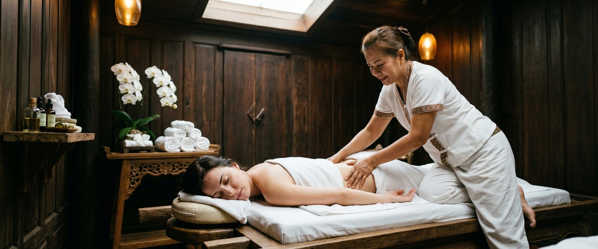
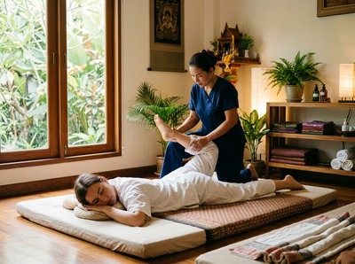

A stiff neck or tight, aching shoulders can make even the simplest movements uncomfortable.

Turning to check your blind spot while driving, reaching for something on a shelf, sitting through a meeting without shifting in your seat: when the muscles of the neck and upper back are locked up, everything feels harder. If you're searching for relief from stiff neck and shoulder tension, massage therapy addresses this problem at its source, not just the surface.
Neck stiffness, a condition characterised by discomfort and reduced range of motion when trying to turn or flex the neck, is one of the most common musculoskeletal complaints. It typically involves the muscles and soft tissues of the cervical spine and upper back, most often the levator scapulae, a muscle running from the side of the neck down to the shoulder blade, and the upper trapezius, the broad muscle spanning the neck, shoulders, and upper back.

Causes range from sleeping in an awkward position and sustained poor posture at a desk, to emotional stress carried as physical tension. NHS Inform notes that neck problems can cause pain and stiffness that sometimes spreads into the shoulders, arms, and upper back. For most people, the stiffness is the result of accumulated daily strain rather than a single injury.
Massage works directly on the muscle tissue and connective structures responsible for neck and shoulder stiffness. By applying targeted pressure and mobilising the soft tissue, a therapist can reduce muscle tone, improve local circulation, and allow the affected muscles to lengthen and relax. A systematic review and meta-analysis of massage therapy for neck and shoulder pain found that massage produced meaningful short-term reductions in both neck and shoulder pain across multiple randomised controlled trials.
Traditional Thai massage is particularly effective for this type of problem. It combines acupressure along specific energy lines with assisted stretching techniques that gently mobilise the cervical spine and release tension in the upper trapezius and levator scapulae. Swedish massage uses long, flowing strokes to increase circulation and reduce muscle guarding. Sports massage applies deeper, more targeted pressure to break down adhesions and trigger points in the affected tissue. You can book your session online to get started with whichever approach suits you.
Hot stone massage is also worth considering for chronic shoulder tightness. The heat from basalt stones penetrates deep into the muscle fibres, encouraging the tissue to release before any hands-on work begins. This is especially useful where the shoulder muscles have been holding tension for an extended period.
At Serendipity Massage Therapy & Wellness on Hope Street in Glasgow City Centre, a session targeting neck and shoulder stiffness begins with a brief conversation about where you're holding tension and what your daily routine looks like. That context shapes the entire treatment. Your therapist will focus on the upper back, shoulders, neck, and base of the skull, working through the layers of muscle tissue to release both superficial and deeper tension.
Depending on what suits you best, your therapist may recommend traditional Thai massage for its assisted stretching component, a Thai oil massage for a more flowing, targeted approach, or sports massage if the stiffness is linked to physical activity or a specific postural pattern. Sessions are unhurried and tailored to your response on the day. If you work in the offices around Hope Street or the wider city centre, you're a short walk from a session that can undo what a week at a screen builds up. Book an appointment and let us know what you're dealing with.
Anyone carrying sustained tension in the neck and shoulders will notice a difference, but certain people tend to experience these problems most acutely. Office workers who spend six or more hours a day at a screen, particularly those using a laptop without a separate monitor or keyboard, are among the most common clients. Drivers, tradespeople, and anyone who carries bags or equipment on one shoulder regularly are also affected. New parents lifting and carrying young children frequently develop shoulder tension they don't initially connect to that habit. People managing high workloads or chronic stress, which causes involuntary tightening of the neck muscles throughout the day, also see significant benefit from regular massage. Book a session at Serendipity and take the first step toward lasting relief.
It depends on how long you've been carrying the tension and what's causing it. Many people feel a meaningful difference after a single session, particularly when the stiffness is recent. Chronic tension that has built up over months typically responds better to a short course of regular treatments, often two to four sessions spaced a week or two apart, followed by monthly maintenance.
For most neck and shoulder stiffness caused by muscle tension, postural strain, or accumulated stress, massage is safe and effective. You should always let your therapist know the level of pain you're experiencing before the session begins. If your pain is accompanied by numbness, tingling, or weakness in the arms, or followed a recent injury, it's worth consulting your GP first to rule out an underlying structural issue.
Traditional Thai massage and sports massage are both well-suited to neck and shoulder stiffness because they combine targeted pressure with techniques that mobilise the cervical spine and stretch the affected muscles. Thai oil massage is a good option if you prefer a flowing, less intense approach. Your Serendipity therapist will recommend the most appropriate treatment based on what you describe at the start of your session.
Yes. Many tension headaches originate in the neck and upper shoulder muscles, particularly the upper trapezius and the muscles at the base of the skull. Releasing tension in these areas through massage often reduces headache frequency and intensity. Thai head massage, which focuses on the scalp, neck, and upper shoulder area, is specifically designed for this type of relief.
Stress triggers a physical response in the body that causes muscles, particularly in the neck, jaw, and shoulders, to contract and hold tension. Many people do this without realising it throughout a working day. Over time, that repeated contraction creates chronic muscle tightness and reduced range of motion. Massage directly addresses this by releasing the held tension and calming the nervous system response that drives it.
For people whose stiffness is linked to their daily work or lifestyle, a monthly session is a reasonable starting point for maintenance. If you're in an acute phase or dealing with significant tension that has built up over time, fortnightly sessions for six to eight weeks often produce more lasting results. Your therapist at Serendipity can advise on a schedule that suits your situation.